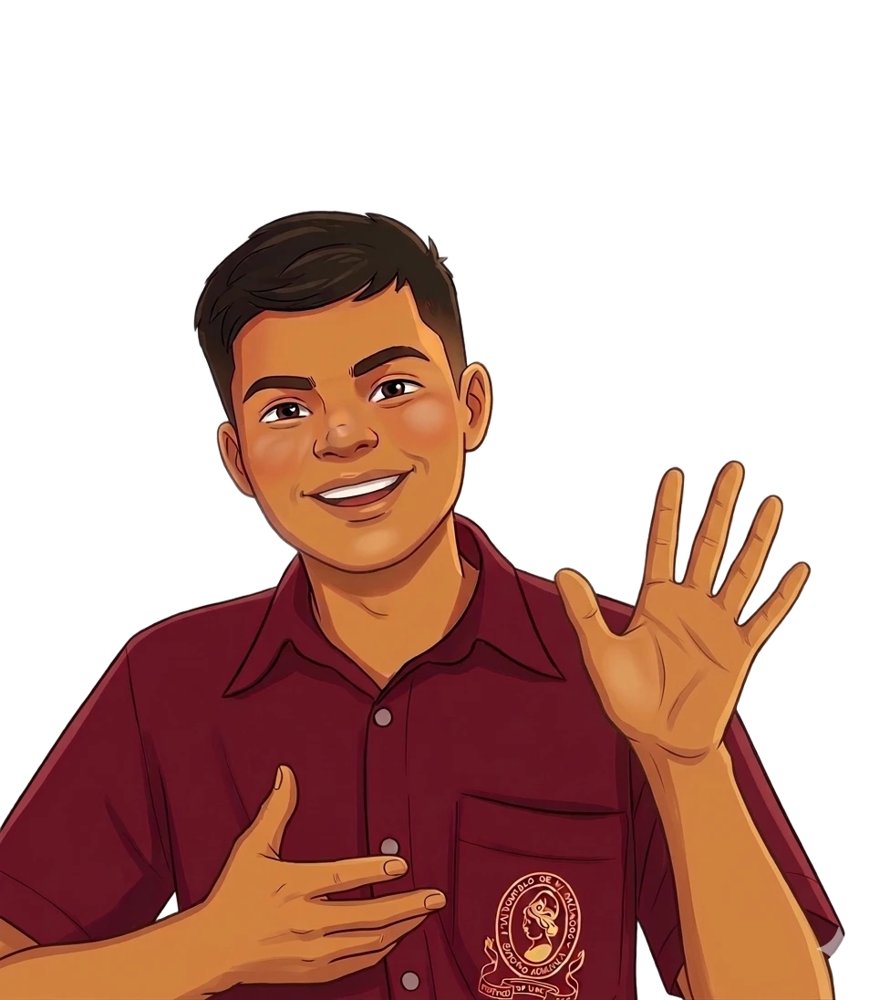

Elige tu misión, Investigador
Demuestra lo que has aprendido en el laboratorio virtual.

Cargando pregunta...
Pregunta 1 de 6¡Misión completada!
Has terminado el desafío. Aquí está tu puntaje:
0/6
Respuestas correctas · +0 pts
Demuestra lo que has aprendido en el laboratorio virtual.

Cargando pregunta...
Pregunta 1 de 6Has terminado el desafío. Aquí está tu puntaje:
Respuestas correctas · +0 pts